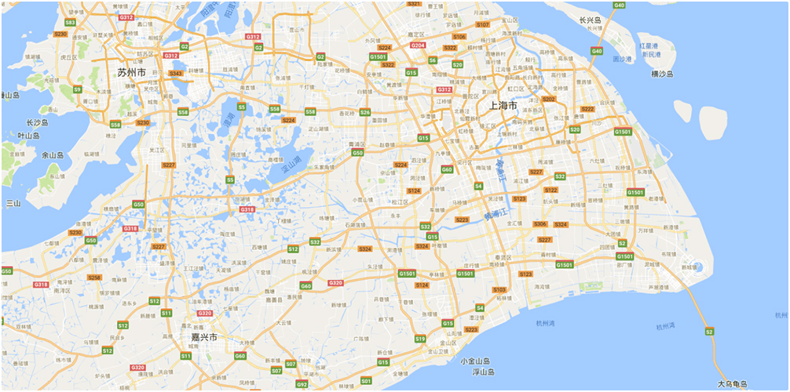

Colombia Claudia Project
 NPO
NI
NPO
NI

Timing keep Trend Team Site DAY MTH
-
Weekly Report Submitted
SQL SeQL HHS
-
Weekly Report Submitted
PTA SA FRA
-
Top Lead Time Sites 1 2
Month Site ID Lead time(Day) Verder 1 2 3 4 5
Shanghai Yinda Technology Industrial Co.,Ltd Copyright@ 2012-2017 All Rights Reserved